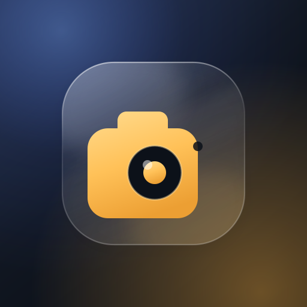

0.0°
正在启动相机…

正在启动相机…
「取图」显示这张照片实际走的路径：capture 是用系统原生满幅成像，画质最好；video 是退回预览流，分辨率与视野都会差一截。如果长期是 video，把它截图发我。
定位需要授权。地址由地图服务解析，可能不准，可手动填写。保存到相册后请用「原图」方式转发，压缩会破坏签名。
这里的照片只存在于本次运行中，退出应用即清空。点开可预览、保存或分享。
保存后用「原图/文件」方式转发，压缩会破坏签名